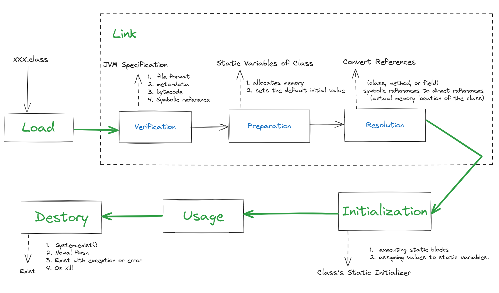

ClassLoader¶
双亲委派¶
在Java中，类加载器采用了双亲委派模型，这意味着当一个类加载器需要加载一个类时，它首先会将这个任务委托给它的父类加载器， 如果父类加载器无法加载这个类，那么这个任务将被传递给它的父类加载器，直到最终传递到顶层的启动类加载器。 只有在所有的父类加载器都无法加载这个类的情况下，子类加载器才会尝试自己加载这个类。
为什么使用双亲委派？¶
防止内存中出现多份同样的字节码¶
因为如果一个类已经被父类加载器加载了，那么子类加载器就不会再次加载这个类，而是直接使用父类加载器加载的那个类。 这样可以节省内存，并且可以确保Java程序的安全稳定运行，因为这样可以避免在不同的类加载器中加载同一个类的不同版本，从而导致类的行为不一致或者出现安全漏洞。
保证Java程序安全稳定运行¶
另外，双亲委派模型还可以保证Java核心类库的安全性，因为Java核心类库通常是由启动类加载器加载的，而其他的类加载器都是由启动类加载器派生出来的。 因此，如果一个恶意程序试图加载一个与Java核心类库同名的类，那么它会被双亲委派模型拦截，因为启动类加载器已经加载了这个类，而其他的类加载器都无法加载这个类。 这样可以确保Java核心类库的安全性，避免恶意程序篡改核心类库中的类，从而导致Java程序出现安全漏洞。
查找已加载的类¶
private native final Class<?> findLoadedClass0(String name)
这个方法是ClassLoader类的一个私有方法，只能被ClassLoader类的子类或者同一包中的类访问。
这个方法的实现是由Java虚拟机提供的本地方法库来完成的，具体实现方式因平台而异。 在大多数情况下，这个方法会遍历该类加载器已经加载的所有类，查找是否有与给定名称相同的类。如果找到了相应的类，就返回这个类的Class对象，否则返回null。
需要注意的是，这个方法只能查找该类加载器已经加载的类，而不能查找其他类加载器加载的类。
类加载流程¶
Java类加载过程是指将Java字节码文件加载到Java虚拟机中并进行解析、验证、准备、解析和初始化的过程。Java类加载过程可以分为以下三个步骤：
加载：类加载器将字节码文件加载到内存中，并生成对应的Class对象。
链接：链接过程包括 验证、准备 和 解析 三个阶段。验证阶段主要是对字节码文件进行验证，确保字节码文件符合Java虚拟机规范；准备阶段主要是为类的静态变量分配内存并设置默认初始值；解析阶段主要是将符号引用转换为直接引用。
初始化：初始化阶段是类加载过程的最后一个阶段，主要是执行类的静态初始化器，即执行类中的static块和static变量赋值操作。
需要注意的是，Java类加载过程是按需加载的，即只有在需要使用某个类时才会进行加载。另外，Java类加载器采用了双亲委派模型，即当一个类加载器需要加载某个类时，它会先委派给父类加载器进行加载，如果父类加载器无法加载该类，才由该类加载器自己进行加载。这种模型可以保证Java类的安全性和稳定性，避免了类的重复加载和类的冲突问题。
